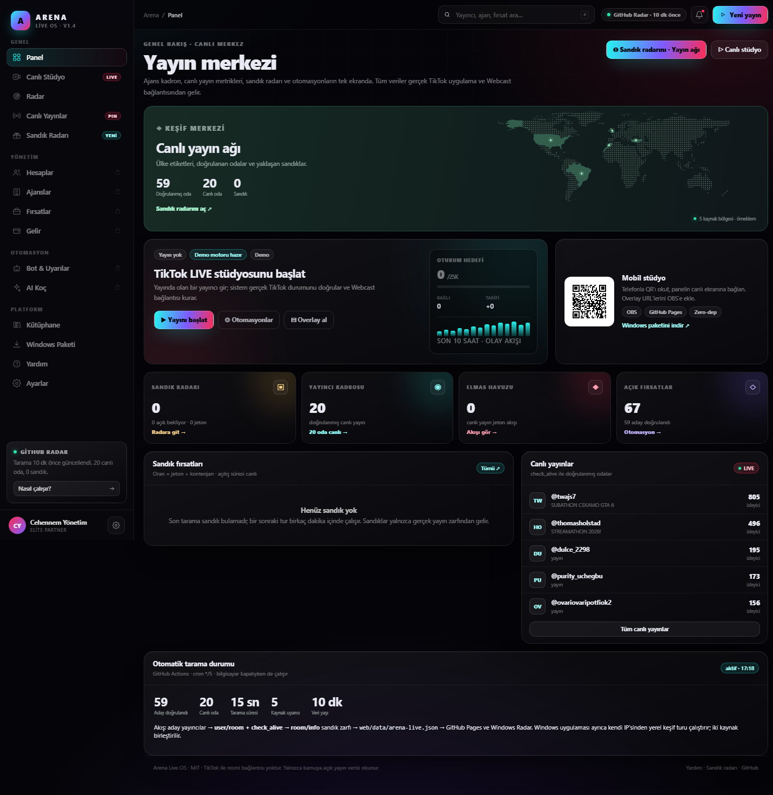
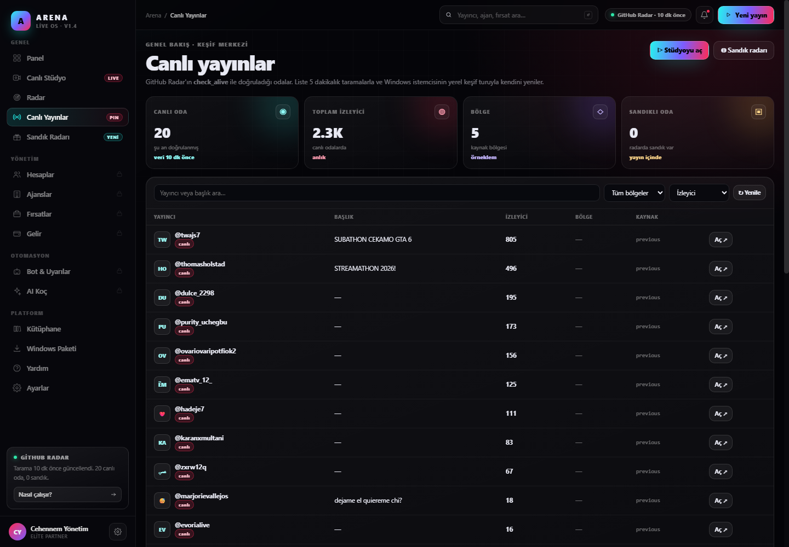
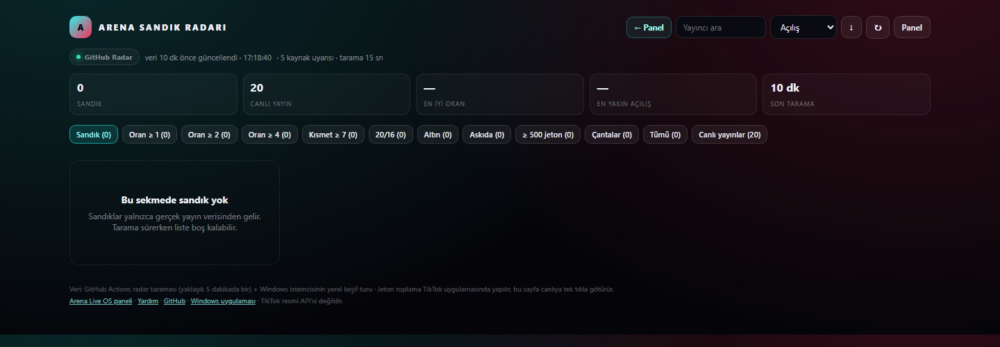

Platform · Destek
Yardım & kurulum
Panel, GitHub otomasyonu ve Windows paketi için resimli rehber. Her adım bu depodaki gerçek ekranlarla hazırlandı.
1 · Paneli kullanma
Panel üç katmandan oluşur: Yayın merkezi (özet), Canlı yayınlar (doğrulanmış odalar) ve Sandık radarı (jeton/kontenjan fırsatları). Sol menüdeki tüm bağlantılar bu sayfalara gider.


2 · Windows kurulumu
Kurulum paketi GitHub Actions tarafından üretilir; içinde Node.js gömülüdür, ayrıca bir şey kurman gerekmez. Yönetici izni istemez, kullanıcı hesabına kurulur.
Güncelleme: Uygulama açılışta /api/update/check ile yeni sürümü denetler; "Güncelle" dediğinde kurulum paketini indirir ve kendini yeniden başlatır. Elle güncelleme için yeni Setup dosyasını çalıştırman yeterlidir.
3 · Tam otomatik tarama
Taramayı sen başlatmıyorsun. İki bağımsız kaynak sürekli çalışır ve sonuçları birleştirir:
GitHub Actions
.github/workflows/radar.yml her 5 dakikada bir çalışır. Aday yayıncıları Tik.Tools, TikWM ve bölge dizinlerinden toplar; user/room ve check_alive ile canlılığı doğrular; canlı odalar için room/info sandık zarfını okur; sonucu web/data/arena-live.json dosyasına yazar ve GitHub Pages'i yayınlar. Bilgisayarın kapalı olsa bile çalışır.
Windows yerel keşif turu
Kurulu uygulama, paket içindeki aynı tarayıcıyı kendi IP'sinden çalıştırır. Bu tur, GitHub taramasının kaçırdığı bölgesel odaları ve sandıkları yakalar; iki veri kaynağından daha yeni olanı gösterir. Ayrıca bilinen odaların room/info zarfı 20 saniyede bir yoklanır, böylece sandık süresi geçmeden bildirim çıkar.
4 · Tam panel modülleri
Bu GitHub Pages paneli herkese açık bir vitrindir. Yönetim ve otomasyon bağlantıları tam panele gider; hiçbir modül kilitli değildir. Tam panel varsayılan olarak http://localhost:3000 adresinde çalışır:
- Hesaplar: yayıncı hesapları, takip listesi ve erişim durumu.
- Ajanslar: kadro, sözleşme ve performans grupları.
- Fırsatlar: yüksek oranlı sandık ve yayın fırsatlarının kaydı.
- Gelir: jeton ve hediye akışından türetilen gelir özeti.
- Bot & Uyarılar: masaüstü bildirimi, webhook ve otomatik hatırlatma.
- AI Koç: yayın başlığı, hedef ve içerik önerileri.
Sol menüdeki Hesaplar, Ajanslar, Fırsatlar, Gelir, Bot & Uyarılar ve AI Koç bağlantıları tam paneli açar. Adresi Ayarlar → Tam panel adresi bölümünden değiştirebilirsin. Windows tam kurulum paketi paneli bu adreste başlatır.

5 · Overlay ve OBS
Yerel paneldeki overlay sayfasını OBS'te Browser Source olarak ekle. Widget'lar panel API'sinden beslenir:
<div data-arena="goal" data-username="kullanici" data-goal="5000"></div> <div data-arena="top-gifters" data-username="kullanici" data-rows="5"></div> <div data-arena="chat" data-username="kullanici" data-rows="8"></div>
Genişlik 1920, yükseklik 1080, "Sayfayı önbelleğe al" kapalı olsun. Overlay arka planı saydamdır.
6 · Sık sorulanlar
Panelde sandık sayısı 0 görünüyor, hata mı?
Hayır. Sandıklar yalnızca TikTok zarfında gerçekten göründüğünde listelenir. Tarama sürerken veya o an sandık yokken 0 kalması normaldir. Bir sonraki tur birkaç dakika içinde çalışır.
Veri ne kadar sürede yenilenir?
GitHub taraması yaklaşık 5 dakikada bir, Windows istemcisi ham veriyi 5 saniyede bir, bilinen odaların zarfını 20 saniyede bir yoklar. Web paneli 10 saniyede bir tazelenir.
Tam panel nerede açılır?
Statik sayfadaki yönetim ve otomasyon bağlantıları tam panele gider. Varsayılan adres http://localhost:3000; Windows tam kurulum paketi bu paneli başlatır. Farklı bir adres için Ayarlar → Tam panel adresi bölümünü kullan.
Jetonlar otomatik toplanıyor mu?
Hayır. TikTok otomatik jeton toplamaya izin vermez. Sistem sandığı süresi dolmadan gösterir, bildirir ve canlıya tek tıkla götürür.
Kurulumu nasıl kaldırırım?
Windows Ayarlar → Uygulamalar → Arena Radar → Kaldır. Kullanıcı verileri %APPDATA%\ArenaRadar altındadır; istersen bu klasörü de silebilirsin.